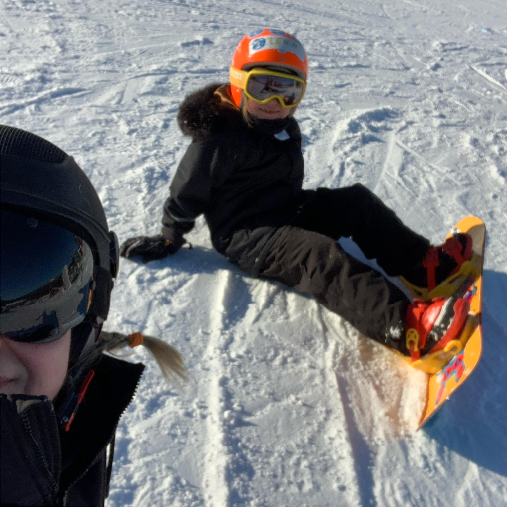
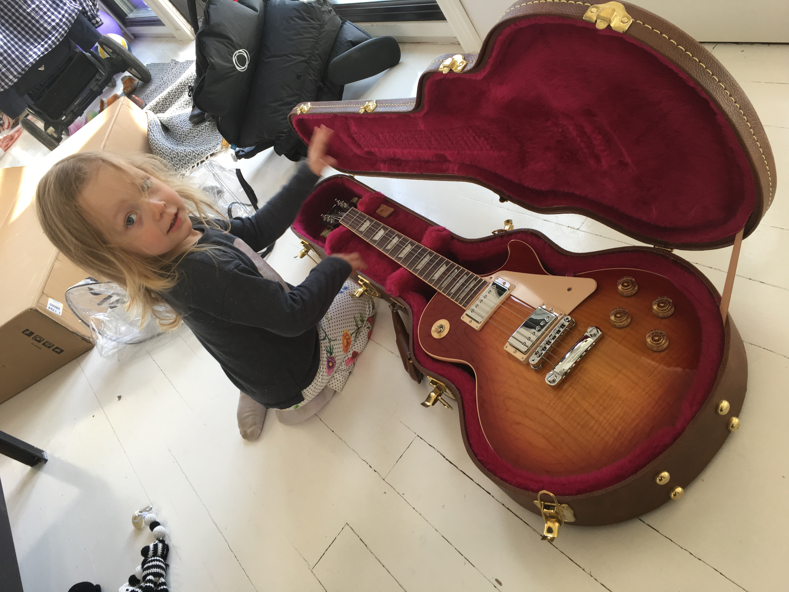

Etusivu | Harrastukset | Portfolio
Olen hurahtanut pyöräilyyn näin vasta yli kaksikymppisenä. Ensimmäisen 100km:n lenkin ajoin Saksassa, Münchenin lähiöllä ja pisin pyörälenkki viime kesänä oli 250km eli ajoin syntymäkaupungista Bielsko - Bialasta Wroclawiin.
Pyöränä minulla on gravelpyörä Konan Sutra Ltd ja tekisi kyllä mieli ostaa lisäksi maantiepyörä sekä maastopyörä, mutta tällä hetkellä budjettia ei ole. Minuun työnantaja onneksi tarjoaa työsuhdepyörä-etu jonka ansioista toteuduin suuri haave ja tilasin GoCycle sähköpyörän.
Gravel-pyörän huollan pääosin itse, sillä YouTube tarjoaa kyllä hyvää opastusta ja se on myös hauskaa ja rentouttavaa. Lapsetkin pyöräilee usein minun kanssani ja molemmilla on Islabikes-pyörät joiden tärkein ominaisuus on kohtuullinen paino. Se mahdollistaa suunnitella pitkiä retkejä pääkaupunkiseutua ympäri.
Alla kuva yhdestä pyöräretkestä, Vantaanjoen rannalla.

Lumilautailu on kasvattanut nopeasti suosiotaan talvilajien keskuudessa. Laji on tunnettu näyttävistä tempuistaan, ja sen ympärille on kehittynyt omanlaisensa rento alakulttuuri, jolle vastinetta voi hakea ehkä lähinnä menneiden vuosikymmenten skeittauskulttuurista.
Moni lapsi ja nuori aloittaa lumilautailun heti ensimmäisenä laskettelulajinaan, mutta suksilla laskemaan tottuneille kynnys lautaan vaihtamiseen saattaa olla korkeampi. Minä kuuluun siihen vaihtaja-ryhmään.
Olen laskettelut koko elämää mutta vasta vuonna 2017 tein vaihdon lumilautailu-maailmaan ja olen tykkännyt alusta lähtien. Muutama kausi on nyt laskettu ja kaikenlaista on koettu. Opettelua, kaatumista, oppimisen riemua ja taas lisää kaatumisia. Harjoitus on kuitenkin tuottanut tulosta ja oppiminen on mennyt eteenpäin.
Vaikka Uusimaassa harrastusolosuhteet kelien puolesta eivät parhaat mahdolliset valitettavasti olekaan, niin olemme mahdollisuuksien mukaan matkustaneet lumen luokse Rukassa ja myös Italiassa.
Kotirinteet sijaitsevat Talmassa, Siipossa. Tänä vuonna myös tyttäreni aloitti lumilaudailun kanssa ja se on todella hauskaa harrastaa sitä yhdessä.
Alla kuva päivästä Rukassa.
Kitaran soiton aloitin kotona itsekseni opettelemalla kielien nimiä ja sointuja. Olin silloin noin 12 vuotias. Olin niin innokas soittamisesta että soitin joka päivä koulun jälkeen kavereiden kanssa, ja joskus myös koulussakin. Saatoin herätä jopa muutamia tunteja ennen kouluun lähtöä ja vain harjoitella.
Lukion jälkeen alkoi pitkä tauko pois harrastuksista mutta kolmekymppisenä palasin kitaran pariin. Nykyään soitan melkein joka päivä ja minulla on 5 kitaraa. Mun lempimalli on Gibson Les Paul, jonka aina olen halunnut saada sen jälkeen kun näin Guns 'N' Rosesin videon "November Rain" jossa Slash soitti Gibsonia keskellä autiomaata.
Alla kuva lempikitarastani. Merkki ja malli on Gibson Les Paul. Kitaransoitto siis todella avasi minulle aivan uuden näkökulman itsestäni. Musiikin tekeminen ja kuunteleminen tekee hyvää. Se on todella tärkeä osa minun elämääni.
